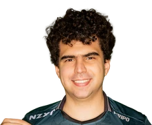

Circuito Desafiante · Brasil
En resumen
Los 15 primeros de los 45 jugadores que la Circuito Desafiante (Brasil) tiene en el leaderboard, ordenados por el Elo de su mejor cuenta y medidos en br1. La tabla va de Challenger · 3073 LP a Challenger · 2315 LP. Medido el 2026-09-03.
| # | Jugador | Equipo | Rol | Elo | Victorias | KDA |
|---|---|---|---|---|---|---|
| 1 |  Bwipo |
EST | Top | Challenger · 3073 LP | 62 % de 374 | 2.74 |
| 2 | Yupps | KBM | Top | Challenger · 2912 LP | 55 % de 1081 | 2.50 |
| 3 | Kojima | KBM | Bot | Challenger · 2865 LP | 57 % de 1117 | 2.70 |
| 4 | konseki | INTZ | Support | Challenger · 2848 LP | 55 % de 2037 | 2.84 |
| 5 | Drakehero | NERD | Jungle | Challenger · 2827 LP | 55 % de 1186 | 3.38 |
| 6 | Pilot | NERD | Mid | Challenger · 2748 LP | 55 % de 734 | 2.78 |
| 7 | Guigs | KBM | Support | Challenger · 2714 LP | 58 % de 770 | 3.52 |
| 8 | SuperCleber | VKS.A | Top | Challenger · 2616 LP | 54 % de 1521 | 2.46 |
| 9 | Grevthar | KBM | Mid | Challenger · 2538 LP | 56 % de 578 | 3.08 |
| 10 | Qats | VKS.A | Mid | Challenger · 2485 LP | 58 % de 643 | 3.01 |
| 11 | zay | VKS.A | Support | Challenger · 2360 LP | 59 % de 543 | 3.37 |
| 12 | Nero | RMD | Jungle | Challenger · 2356 LP | 55 % de 1280 | 2.93 |
| 13 | Makes | NERD | Top | Challenger · 2353 LP | 65 % de 403 | 2.94 |
| 14 | Kog | NERD | Bot | Challenger · 2345 LP | 58 % de 589 | 2.93 |
| 15 | StineR | INTZ | Jungle | Challenger · 2315 LP | 56 % de 903 | 3.67 |
De esta liga se publica el Elo, no el Riot ID: las cuentas con nombre se indexan cuando un servidor sigue la liga, y ahora mismo eso está hecho en la LEC.
Cuántos de los jugadores de la Circuito Desafiante tienen cada campeón entre los que más juegan: Ezreal lo llevan 10, que es el más extendido de la liga. Es presencia, no partidas — el leaderboard dice qué juega cada uno, no cuántas veces.
| Campeón | Jugadores que lo llevan | El de más Elo que lo juega |
|---|---|---|
| Ezreal | 10 | Kojima |
| Jayce | 10 | Bwipo |
| Lee Sin | 9 | Drakehero |
| Ambessa | 8 | Bwipo |
| Aurora | 6 | Pilot |
| Bard | 6 | Guigs |
| Camille | 6 | konseki |
| Nautilus | 6 | konseki |
Los 3 próximos partidos de la Circuito Desafiante, repartidos en 3 días, con la hora de inicio en UTC. El primero es KBM contra INTZ, el lunes 7 de septiembre a las 20:00 UTC.
Playoffs · Bo5
Playoffs · Bo5
Finals · Bo5
Calendario oficial de la Circuito Desafiante en lolesports, leído el 2026-09-03. Las horas de la Circuito Desafiante van aquí en UTC, no en hora local: esta página se sirve igual en todo el mundo. A esos mismos jugadores el bot los vigila en br1 y avisa cuando entran en SoloQ.
Bwipo (EST, Top), con Challenger · 3073 LP. Es el más alto de los 45 jugadores de la Circuito Desafiante que JetaDirectaBot tiene indexados.
45 jugadores en 10 equipos, con unas 155 cuentas de SoloQ entre todos: una media de 3.4 cuentas por jugador. Sale de contar el leaderboard de la Circuito Desafiante, no de una estimación.
Sí. JetaDirectaBot avisa en tu canal de Discord con el campeón, el rol, el Elo y el equipo del jugador de la Circuito Desafiante en cuanto empieza la partida, sin que tengas que pedir nada.
7REX (7REX), EST (EST), INTZ (INTZ), KBM (KBM), NERD (NERD), PNG.A (PNG.A), REDA (REDA), RMD (RMD), TSS (TSS), VKS.A (VKS.A).
KaBuM! Eports contra INTZ, el lunes 7 de septiembre a las 20:00 UTC (Playoffs). Después hay 2 más repartidos en 3 días de calendario.
De ahora mismo. Es el rango actual de SoloQ de cada jugador, leído del leaderboard de la Circuito Desafiante y refrescado con los datos del bot; no es un histórico de la temporada ni el resultado de los partidos oficiales, que son cosas distintas.
JetaDirectaBot publica este aviso en tu canal de Discord —o en tu chat privado— en cuanto el jugador entra en partida, con las 20 ligas del catálogo. Gratis.
El plan gratuito sigue una liga; hasta 4 con los de pago, que es el techo real por el cupo de peticiones de Riot.